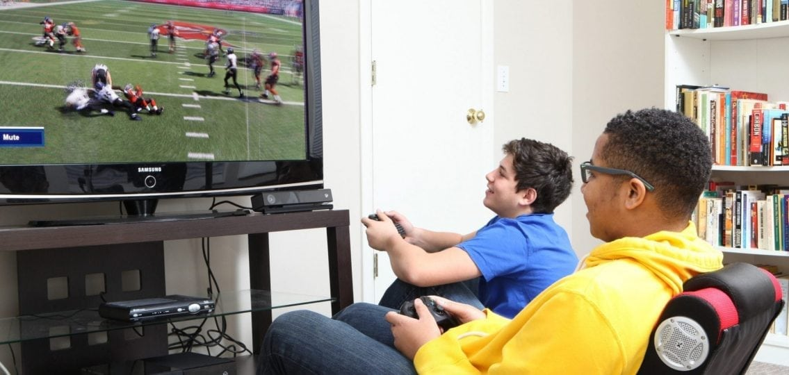

Are Video Games Really Destroying Your Teen? - The Exponential Growth of the Gaming in 2021
The world's most popular video game emphasizes negative themes and promotes, killing of people and animals, criminal drug behavior, and multiple illegal acts. Video Games have come in recent years to be the root cause of lots of teen depression, aggression, and overall health. There are lots of negative effects when teens are playing video games, but lots of positives. On this website, we will talk about the positive and negative effects of video games on children and teens throughout the United States.
Postivie Effects Of Video Games On Teenagers:
This is not a hoax, Video Games can be good for any teenerager or child. There are multiple benefits that can help your child develop while they play video games. Here are the reason why gaming can be good.(1)(2)(3)
1. Improves Hand Eye Coordination:
Lots of Video Games are fast, high-action games that require lots of attention to play. Research has shown that teens can learn hand-eye coordination skills while playing video games, especially high-action shooter games. Different skill games help build these skills when the brain is required to keep track of speed, aim, directions, and different team positions. Since your hands are on a keyboard or a controller while playing these games, the brain processes these data with the hands.
2. Video Games improve different cogntivie functions:
According to the American Psychological Association, video games improve teens' conginite skills such as better attention, visual processing, memory, perception, and even reasoning skills. Researchers have concluded that positive effects of video games include improvment in teenagers capability of thinking, just like in academic classes.
3. Dexterity in Hands:
Many teenagers either choose to play on a console like an Xbox or a PlayStation, but some often select a PC or a Laptop. Teens that play on computers improve the movement of their hands while playing on a mouse and keyboard. They learn different functions and give quick responses while building their keyboard skills.
4. Problem-Solving Skills
Almost ever video game requires different strategy skills to either complete or finish a task. Different strategy games build on problem solving skills. Reasearchers have suggested that video games can aid teens in developing problem solving skills. You could be trying to spread a plague in the video game Plague Inc, or trying to capture an objective with a team in Call of Duty, video games try to challenge the player with different problems.
Negative Effects of Video Games
Video games can cause lots of real world problems for your teenager as lots of different attributes can grow while playing different video games. Lots of different video games include lots of violence and distruction.
1. Violence and Agression in Video Games
There has been hundreds of research papers on why different video games cause violence and how it can raise children's aggression, but lots of counter research papers proving why they are not corilated at all. Video games have been the center of the gun violence and aggression in America and it is hard to pick a side to who is right about the alarming topic. Even in the 1990s when Mortal Combat came out whith realistic 1 on 1 battles. There is no denying that lots of video games include lots of violence and guns, drugs, and blood. Everyone functions differently and there are two sides to this topic.There is a slight link to video games and aggression but not complete violence because the topic is still in debate with lots of research still being conducted about the two connections.
2. Addition to Video Games:
The term "pathological gaming" or video game addiction is being widely discussed in the medical field though it is not yet classified as any formal disorder in the US Diagnostic and Statistical Manual of Mental Disorders. Addited Gamers are more likely to develop anxiety, insomnia, social isolation, and depression.
3. Academic Performance:
Playing video games for long hours can affect a teen’s performance in school. Research has shown that a higher amount of time spent playing onscreen games can be associated with lower academic performance. Lots of teens have decided to play video games instead of doing their homework. A survey has shown 47% of heavy online gamers got poor grades while 23% of light gamers have better grades.